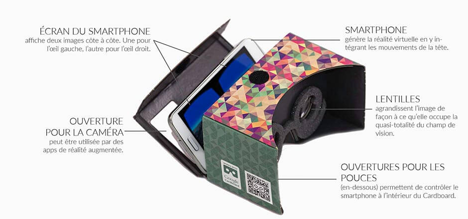
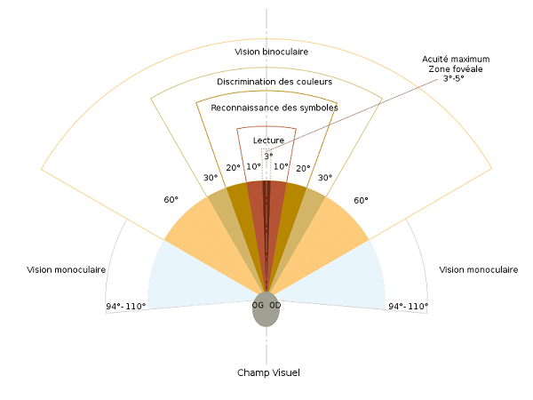
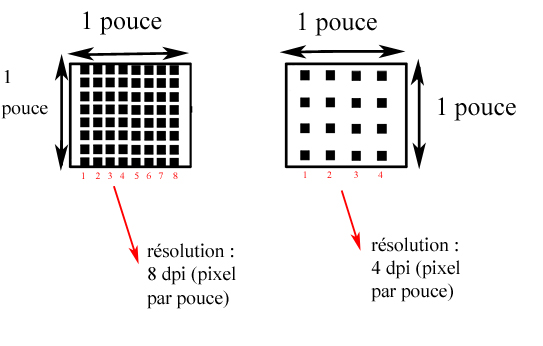
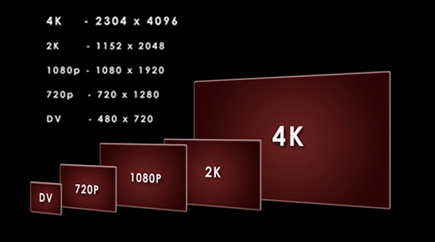
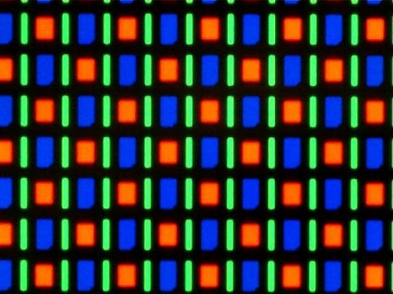
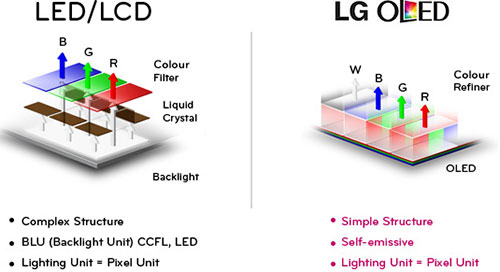
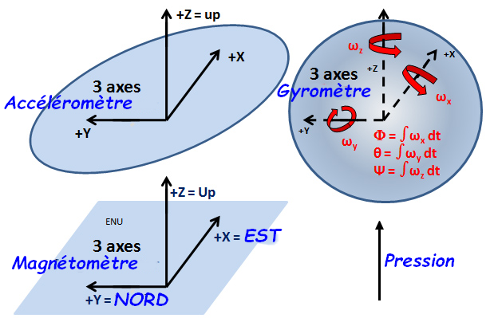
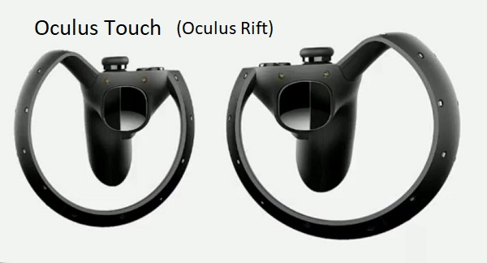
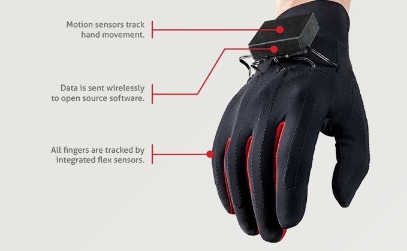

Avec l'avancée technologique et notamment la miniaturisation de la technologie, l'Homme est maintenant capable de créer des processeurs perfectionnés, de très petit pixels ou
encore des circuits électroniques de plus en plus petits et complexes. Grâce à ces innovations, un nouvel équipement a été inventé : le casque de réalité virtuelle.
Quand on parle de casque de réalité virtuelle, on pense d'abord au domaine du jeu vidéo, mais il faut savoir qu'il peut être également utilisé dans un cadre culturel ( lors des visites de musées ou de villes ) ou encore dans le domaine médical où il est utilisé comme moyen d'apprentissage ou pour guérir certaines phobies (vertige, arachnophobie,...)
Mais comment fonctionne le casque de Réalité Virtuelle (ou RV) ?

Schéma du Google Cardboard, le casque de RV le plus simple.
Les Lentilles :
La lentille permet de réduire la taille de l'image afin de créer l'illusion de l'éloignement pour que l'oeil puisse appréhender la globalité de l'image projetée. Le cristallin permet alors de faire converger l'image au centre de la rétine et d'avoir une image optimale pour l'oeil.
Le FOV (Field Of View) est le nom donnée au résultat de ces lentilles. Il permet de reproduire l'ensemble de la vue humaine. Sans lui, il n'y a pas d'effet de 3D. Comme il reproduit l'angle de vue humaine, le FOV doit avoir un angle précis pour éviter à l'utilisateur de voir les bordures de l'écran, ou d'avoir un champ visuel trop restreint.

Les Ecrans
Pour commencer, il faut connaître quelques définitions :
la définition : elle correspond au nombre total de pixels dans l'image. Elle est définie par le nombre de pixels sur la hauteur de l'image multiplié par le nombre de pixels sur la largeur de l'image. Une image de 2000 pixels sur 3000 (6 Mpx car 2000x3000 = 6 000 000) aura toujours le même nombre de pixels, quelle que soit la taille qu'on lui donne ensuite. la résolution : elle dépend de la taille de l'écran et s'exprime en PPI (Pixel Per Inch), il s'agit donc du nombre de pixels par pouce. Une dalle de 5 pouces d’une définition de 2560 x 1440 possédera ainsi une résolution de 587 PPI alors que si la définition était de 1920 x 1080 pixels, la résolution serait de 440 PPI.
Pour calculer une résolution, il faut connaître la définition de l'écran et sa taille.
Il faut ensuite calculer : le nombre de pixels (de la hauteur ou de la longueur) divisé par le nombre de pouce (sur la hauteur ou la longueur).
Le plus important est donc la résolution car on peut avoir un grand écran et peu de pixels et un petit écran avec un très grand nombre de pixels. La qualité de l'image sera donc différente. 1cm = 0,393701pouce


Les écrans utilisés par la réalité virtuelle doivent être assez petits pour ne pas être trop imposants, mais avoir une résolution élévée pour éviter d'avoir un effet dit "damier" (les pixels sont "visibles"). Pour éviter ce problème, la plupart des marques ont décidé d'adopter l'écran PenTile.
Le PenTile a un arrangement RGBG (Red Green Blue Green) des pixels. Il a donc une architecture de pixels différente des écrans habituels. Le vert est moins large que le bleu et rouge, mais est deux fois plus présent. Lors de la synthèse additive de ces couleurs, l'écart entre chacune de ces couleurs est grandement réduit. L'effet de grille est alors beaucoup moins présent.

Les inconvénients du PenTile sont : la netteté de l'image sur une faible résolution (sur les écrans en ayant une plus forte, ce problème n'est plus visible), la difficulté à calibrer l'écran (il est plus complexe qu'un écran simple RGB red green blue).
Mais ils sont plus faciles à construire, leur durée de vie est plus longue donc il y a moins de risque d'avoir des pixels dits « morts ». Ils consomment aussi moins d'énergie car le nombre de pixels bleus est réduit (ils ont besoin de plus d'énergie).
Par contre il y a un autre problème : la création du noir qui n'est pas parfaite. Pour cela, les constructeurs l'ont associé à la technologie de l'OLED
L'OLED (Organic Light-Emitting Diode) repose sur des composés organiques : le carbone (C), l’oxygène (O), l’hydrogène (H) et de l’azote (N). Ils sont plus faciles à produire, moins chers et permettent de créer des écrans souples que les LED. Comme il s'agit de diodes, ils produisent leur propre lumière contrairement aux QLED qui sont composés de petits cristaux qui sont éclairés. Il suffit alors d'éteindre une diode pour avoir un noir absolu.
Mais l'OLED a ses limites : elle ne peut être utilisé sur grand écran, et est donc utilisé principalement pour les écrans de tablettes ou de smartphone (mais elle a un temps de réponse plus rapide, pas d'image floue,...)
Comment fonctionne l'OLED ?

Les Différents Capteurs
Le Casque de Réalité Virtuelle peut être équipé de différents capteurs, en fonction de la marque (le casque de Google n'en a aucun, il utilise les capteurs de notre téléphone contrairement à l'Occulus Rift par exemple)
Un "vrai" casque comporte alors un accéléromètre (détecte les accélérations, la gravité, et donc le sol. Il permet aussi d'affiner les calculs positionnels), d'un magnétomètre (fonctionne comme une boussole, il détecte les rotations de la tête. Il fait parti du gyroscope. Il doit être associé au suivi positionnel) et d'un gyromètre (détecte les inclinaisons de la tête, les rotations, et est combiné à l'accéléromètre. Il est très précis)
Et oui, même si le smartphone est bien équipé de capteurs de position et autres, ces derniers sont bien moins précis que ceux intégrés au casque. Grâce au dispositif de positionnement inclus au sein du Gear VR, le temps de latence est quasi inexistant, même lorsqu'on bouge la tête très rapidement. Dans la pratique, on évite ainsi le phénomène de nausées.

L'accéléromètre fonctionne sur plan X,Y et Z. Il enregistre les variations de vitesse dans une direction donnée. Le gyromètre lui, détecte les rotations autour des axes X Y Z, les changements dans l'orientation (mouvement angulaires) ou encore les changements de vitesse de rotation.
Le magnétomètre lui est un peu moins utilisé. Pour améliorer le casque, d'autres capteurs ont été intégrés, dans les manettes ou dans les gants.
Le casque de Sony, le PlayStation VR a de petites DEL bleu sur le casque. Celles-ci sont utilisés par des capteurs de lumière, qui repèrent ces petites DEL dans un espaces défini. C'est aussi une des méthodes pour retrouver le casque, et permettre à son utilisateur de se déplacer dans son jeu, tout en se déplaçant réellement.
Le 3D
Les Gants
Pour améliorer l'expérience du joueur, le casque lui-même ne suffit pas. Pour permettre à l'utilisateur d'évoluer dans son environnement numérique, les créateurs du casque de Réalité Virtuelle ont mis au point des "manettes" de tout genre pour permettre au joueur de bouger, interagir avec son monde virtuel. Pour pousser encore plus loin, les constructeurs travaillent acuellement sur des gants dit "haptiques" qui permettent d'utiliser sa main entière, réduisant encore plus l'écart entre virtuel et réel.

Les Vêtements
Les combinaisons utilisés pour améliorer l'expérience de la Réalité Virtuelle est encore en plein développement
Mais des prototypes sont en phase test comme des "armures" qui reproduisent les sensation d'impacts de balles ou encore de coups.
{kind=link}